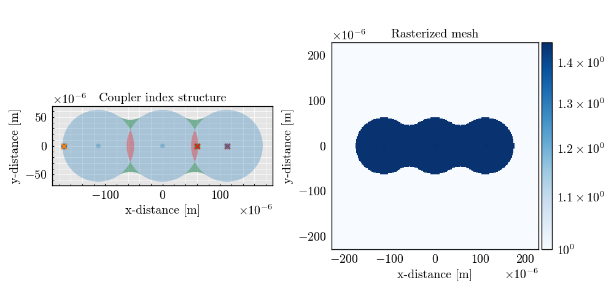

Note
Go to the end to download the full example code
3x3 Line - Geometry Visualization#
This script demonstrates how to create and visualize a 3x3 line geometry using the FiberFusing library.
from FiberFusing import Geometry, BackGround
from FiberFusing.fiber.catalogue import load_fiber, get_silica_index
from FiberFusing.configuration.line import FusedProfile_03x03
Define the operational parameters
wavelength = 1.55e-6 # Wavelength in meters (1.55 micrometers)
# Set up the background medium (air)
air_background = BackGround(index=1.0)
# Create the cladding structure based on the fused fiber profile
cladding = FusedProfile_03x03(
fiber_radius=62.5e-6, # Radius of the fibers in the cladding (in meters)
fusion_degree=0.3, # Degree of fusion in the structure
index=get_silica_index(wavelength=wavelength) # Refractive index of silica at the specified wavelength
)
# Load fibers (e.g., SMF-28) positioned at the cores of the cladding structure
fibers = [
load_fiber('SMF28', wavelength=wavelength, position=core_position)
for core_position in cladding.cores
]
# Set up the geometry with the defined background, cladding structure, and resolution
geometry = Geometry(
background=air_background,
additional_structure_list=[cladding],
x_bounds='centering',
y_bounds='centering',
resolution=250
)
# Add the fibers to the geometry
geometry.add_fiber(*fibers)
# Plot the resulting geometry
geometry.plot()

INFO:root:Computing the optimal structure geometry
INFO:root:Computing the optimal core positions
INFO:root:Core positioning optimization: x = 0.69 -> cost = 6.14e-09 -> core shift: (1.1698984339314535e-05, -2.9866161610865167e-22)
INFO:root:Core positioning optimization: x = 0.80 -> cost = 6.14e-09 -> core shift: (-1.5736536143306346e-05, 4.0173567039644865e-22)
INFO:root:Core positioning optimization: x = 0.87 -> cost = 6.14e-09 -> core shift: (-3.269262030060997e-05, 8.346049990847983e-22)
INFO:root:Core positioning optimization: x = 0.92 -> cost = 6.14e-09 -> core shift: (-4.317205662592724e-05, 1.1021329569015512e-21)
INFO:root:Core positioning optimization: x = 0.95 -> cost = 6.14e-09 -> core shift: (-4.9648704457913644e-05, 1.2674743277731517e-21)
INFO:root:Core positioning optimization: x = 0.96 -> cost = 6.14e-09 -> core shift: (-5.365149295124454e-05, 1.3696609147183011e-21)
INFO:root:Core positioning optimization: x = 0.97 -> cost = 6.14e-09 -> core shift: (-5.612535228990002e-05, 1.4328156986447507e-21)
INFO:root:Core positioning optimization: x = 0.98 -> cost = 6.14e-09 -> core shift: (-5.765428144457541e-05, 1.471847501663452e-21)
INFO:root:Core positioning optimization: x = 0.98 -> cost = 6.14e-09 -> core shift: (-5.8599211628555445e-05, 1.4959704825712003e-21)
INFO:root:Core positioning optimization: x = 0.99 -> cost = 6.14e-09 -> core shift: (-5.9183210599250826e-05, 1.5108793046821534e-21)
INFO:root:Core positioning optimization: x = 0.99 -> cost = 6.14e-09 -> core shift: (-5.9544141812535535e-05, 1.5200934634789486e-21)
INFO:root:Core positioning optimization: x = 0.99 -> cost = 6.14e-09 -> core shift: (-5.976720956994621e-05, 1.5257881267931065e-21)
INFO:root:Core positioning optimization: x = 0.99 -> cost = 6.14e-09 -> core shift: (-5.990507302582022e-05, 1.5293076222757437e-21)
INFO:root:Core positioning optimization: x = 0.99 -> cost = 6.14e-09 -> core shift: (-5.999027732735685e-05, 1.5314827901072644e-21)
INFO:root:Core positioning optimization: x = 0.99 -> cost = 6.14e-09 -> core shift: (-6.0042936481694226e-05, 1.5328271177583795e-21)
INFO:root:Core positioning optimization: x = 0.99 -> cost = 6.14e-09 -> core shift: (-6.0075481628893516e-05, 1.533657957938785e-21)
INFO:root:Core positioning optimization: x = 0.99 -> cost = 6.14e-09 -> core shift: (-6.0095595636031545e-05, 1.5341714454094946e-21)
INFO:root:Core positioning optimization: x = 0.99 -> cost = 6.14e-09 -> core shift: (-6.010802677609283e-05, 1.5344887981191905e-21)
INFO:root:Core positioning optimization: x = 0.99 -> cost = 6.14e-09 -> core shift: (-6.01157096431696e-05, 1.5346849328802042e-21)
INFO:root:Core positioning optimization: x = 0.99 -> cost = 6.14e-09 -> core shift: (-6.012045791615409e-05, 1.5348061508288864e-21)
INFO:root:Core positioning optimization: x = 0.99 -> cost = 6.14e-09 -> core shift: (-6.012339251024637e-05, 1.5348810676412194e-21)
INFO:root:Core positioning optimization: x = 0.99 -> cost = 6.14e-09 -> core shift: (-6.012520618913858e-05, 1.5349273687775686e-21)
INFO:root:Core positioning optimization: x = 0.99 -> cost = 6.14e-09 -> core shift: (-6.0126327104338624e-05, 1.5349559844535494e-21)
INFO:root:Core positioning optimization: x = 0.99 -> cost = 6.14e-09 -> core shift: (-6.012701986803079e-05, 1.5349736699139193e-21)
INFO:root:Core positioning optimization: x = 0.99 -> cost = 6.14e-09 -> core shift: (-6.012744801953872e-05, 1.5349846001295333e-21)
INFO:root:Core positioning optimization: x = 0.99 -> cost = 6.14e-09 -> core shift: (-6.012771263172296e-05, 1.5349913553742862e-21)
INFO:root:Core positioning optimization: x = 0.99 -> cost = 6.14e-09 -> core shift: (-6.0127876171046674e-05, 1.5349955303451472e-21)
INFO:root:Core positioning optimization: x = 0.99 -> cost = 6.14e-09 -> core shift: (-6.012797724390723e-05, 1.5349981106190422e-21)
INFO:root:Core positioning optimization: x = 0.99 -> cost = 6.14e-09 -> core shift: (-6.012803971037033e-05, 1.5349997053160082e-21)
INFO:root:Core positioning optimization: x = 0.99 -> cost = 6.14e-09 -> core shift: (-6.0128078316767735e-05, 1.5350006908929341e-21)
INFO:root:Core positioning optimization: x = 0.99 -> cost = 6.14e-09 -> core shift: (-6.012810217683351e-05, 1.5350013000129742e-21)
INFO:root:Core positioning optimization: x = 0.99 -> cost = 6.14e-09 -> core shift: (-6.012811692316514e-05, 1.5350016764698616e-21)
INFO:root:Core positioning optimization: x = 0.99 -> cost = 6.14e-09 -> core shift: (-6.012812603689929e-05, 1.5350019091330142e-21)
INFO:root:Core positioning optimization: x = 0.99 -> cost = 6.14e-09 -> core shift: (-6.012813166949676e-05, 1.5350020529267506e-21)
INFO:root:Core positioning optimization: x = 0.99 -> cost = 6.14e-09 -> core shift: (-6.012813516025821e-05, 1.5350021420418748e-21)
INFO:root: message: Solution found.
success: True
status: 0
fun: 6.135769142859961e-09
x: 0.9899999762929745
nit: 35
nfev: 35
INFO:root:Core positioning optimization: x = 0.69 -> cost = 1.45e-09 -> core shift: (1.169898433931446e-05, -1.4257131853197909e-21)
INFO:root:Core positioning optimization: x = 0.80 -> cost = 1.95e-09 -> core shift: (-1.5736536143306393e-05, 1.9177551161751604e-21)
INFO:root:Core positioning optimization: x = 0.62 -> cost = 3.45e-09 -> core shift: (2.8655068496618075e-05, -3.492090235951553e-21)
INFO:root:Core positioning optimization: x = 0.73 -> cost = 1.14e-10 -> core shift: (9.141003859775177e-07, -1.113981295465537e-22)
INFO:root:Core positioning optimization: x = 0.74 -> cost = 1.21e-10 -> core shift: (-9.678543159864758e-07, 1.1794892785124046e-22)
INFO:root:Core positioning optimization: x = 0.74 -> cost = 1.88e-11 -> core shift: (1.500754164398212e-07, -1.828915175923191e-23)
INFO:root:Core positioning optimization: x = 0.74 -> cost = 1.42e-12 -> core shift: (-1.1355792006611313e-08, 1.3838895688732189e-24)
INFO:root:Core positioning optimization: x = 0.74 -> cost = 4.71e-11 -> core shift: (-3.7670571797780686e-07, 4.5907772292803885e-23)
INFO:root:Core positioning optimization: x = 0.74 -> cost = 6.55e-12 -> core shift: (-5.2371181596335065e-08, 6.382287724051013e-24)
INFO:root:Core positioning optimization: x = 0.74 -> cost = 2.82e-12 -> core shift: (2.257792702832438e-08, -2.751490841242259e-24)
INFO:root:Core positioning optimization: x = 0.74 -> cost = 4.63e-13 -> core shift: (-3.702120764515618e-09, 4.511641553275246e-25)
INFO:root:Core positioning optimization: x = 0.74 -> cost = 2.93e-13 -> core shift: (2.3455104140534465e-09, -2.8583892640753514e-25)
INFO:root:Core positioning optimization: x = 0.74 -> cost = 1.63e-13 -> core shift: (1.3028562775011407e-09, -1.5877441318964655e-25)
INFO:root:Core positioning optimization: x = 0.74 -> cost = 2.75e-14 -> core shift: (-2.1979750909750635e-10, 2.678593267137388e-26)
INFO:root:Core positioning optimization: x = 0.74 -> cost = 1.94e-13 -> core shift: (-1.5499266328581428e-09, 1.8888398964147754e-25)
INFO:root:Core positioning optimization: x = 0.74 -> cost = 6.42e-15 -> core shift: (-5.1347132701346784e-11, 6.257490565483009e-27)
INFO:root:Core positioning optimization: x = 0.74 -> cost = 3.25e-14 -> core shift: (2.6009354010350416e-10, -3.169666517828703e-26)
INFO:root:Core positioning optimization: x = 0.74 -> cost = 1.01e-15 -> core shift: (8.085217947866327e-12, -9.853164589921306e-28)
INFO:root:Core positioning optimization: x = 0.74 -> cost = 1.30e-14 -> core shift: (1.0434383157663575e-10, -1.2716007831311891e-26)
INFO:root:Core positioning optimization: x = 0.74 -> cost = 1.40e-15 -> core shift: (1.1162934292991673e-11, -1.3603866904204127e-27)
INFO:root:Core positioning optimization: x = 0.74 -> cost = 1.06e-15 -> core shift: (-8.464179368817384e-12, 1.0314991275746942e-27)
INFO:root:Core positioning optimization: x = 0.74 -> cost = 2.20e-16 -> core shift: (1.7639106803583444e-12, -2.1496145499950394e-28)
INFO:root:Core positioning optimization: x = 0.74 -> cost = 1.04e-16 -> core shift: (-8.350064270962278e-13, 1.0175923350164436e-28)
INFO:root:Core positioning optimization: x = 0.74 -> cost = 4.29e-16 -> core shift: (-3.4339235887609084e-12, 4.184799302782729e-28)
INFO:root: message: Solution found.
success: True
status: 0
fun: 1.0437579870717244e-16
x: 0.7364936387323634
nit: 24
nfev: 24
Total running time of the script: (0 minutes 1.721 seconds)